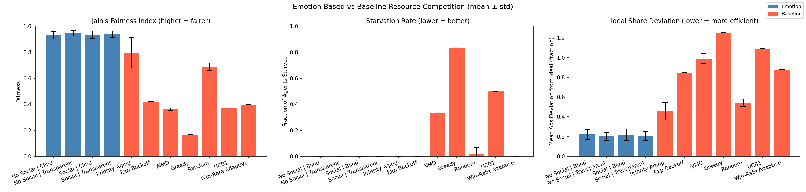
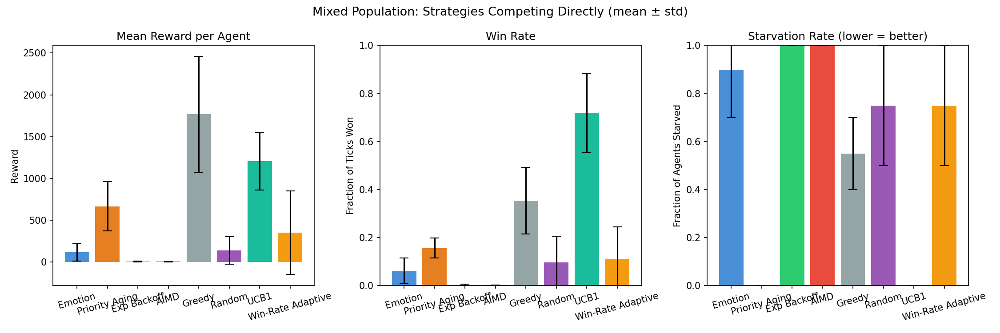
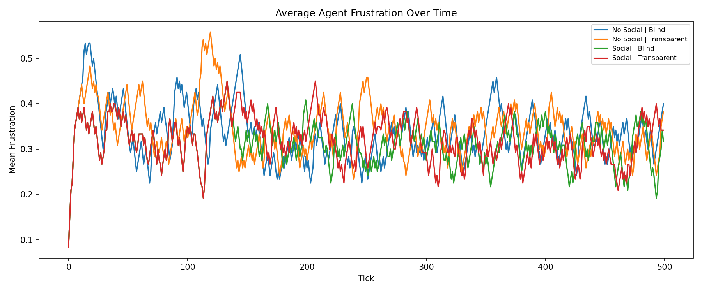
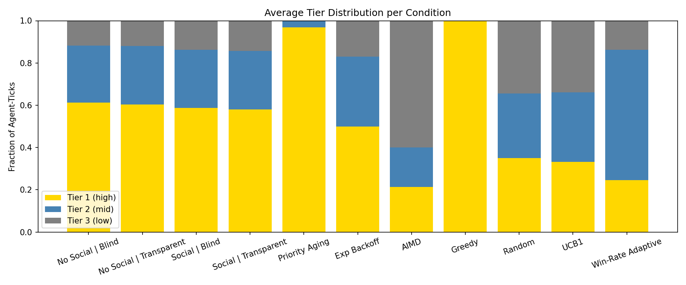
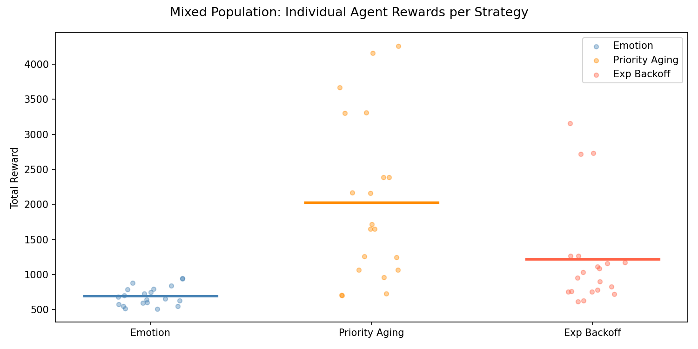

This Tick
Frustration Over Time (all agents)
1. Introduction
Resource competition between concurrent processes is a fundamental problem in computing. Classical scheduling strategies — round robin, exponential backoff, priority queues — address fairness and starvation with fixed mechanical rules. These rules are simple and predictable, but they do not adapt to the history or internal state of the agents they govern.
This project asks a different question: what if agents regulated their own behavior using internal state variables inspired by emotion? Rather than an external scheduler enforcing fairness, could frustration, reward reinforcement, and social cost — variables that accumulate and decay based on outcomes — produce emergent fairness without central coordination?
We build a multi-agent simulation in which heterogeneous agents compete for tiered resources each tick. Emotion-based agents maintain interpretable emotional state that drives their bidding strategy, tier selection, and voluntary yielding behavior. We compare against three classical baselines — exponential backoff, priority aging (OS-style), and round robin — across homogeneous populations (all agents use the same strategy) and a mixed population (all strategies compete simultaneously).
2. System Design
Resource structure. Three tiers reset every tick. One winner per tier per tick is determined by highest bid. Agents commit to a tier simultaneously with no knowledge of others' choices (imperfect information) — they pay their energy cost regardless of whether they win.
| Tier | Reward | Contention |
|---|---|---|
| Tier 1 | 10 units | High |
| Tier 2 | 5 units | Medium |
| Tier 3 | 2 units | Low |
Agent heterogeneity. Agents are created with randomized fixed attributes:
skill_level (base bid strength), regen_rate (energy recovery per tick),
max_energy (energy cap), and personality parameters persistence and
risk_aversion which seed the initial behavioral weights.
Bid formula. Each tick an agent chooses a tier and commits speed (energy). The bid is:
bid = skill_level × speed_used × (1 + frustration) × (1 − social_cost)
Frustration amplifies bids — desperate agents fight harder. Social cost suppresses bids — dominant agents voluntarily handicap themselves. Speed increases bid strength but depletes energy regardless of outcome.
3. Agent Strategies
Emotion Agents maintain three emotional state variables:
- Frustration — increments on each loss, decrements on each win. When frustration exceeds a threshold the agent faces a three-way decision: try harder (increase speed, spend more energy), give up (drop to a lower tier), or stay (same tier and speed, wait for an opening).
- Reward Reinforcement — builds on wins, signals recent success. Decays slowly each tick.
- Social Cost — builds on consecutive wins; when it crosses a threshold the agent is forced to yield to a lower tier and the counter resets. In transparent mode, agents also observe others' frustration and increase social cost faster when others are suffering.
Behavioral weights — the probabilities of choosing try harder, give up, or stay — are initialized from personality and shift gradually based on outcomes. An agent that tried harder and won becomes more likely to try harder next time. One that tried harder and lost becomes more likely to give up. Agents with identical starting personalities diverge over time based on their history.
Priority Aging Agents implement OS-style multi-level feedback queue (MLFQ) scheduling. Each lost tick increases accumulated priority. A win resets it to base skill level. Tier selection is based on time since last win: agents that recently won target tier 1; those that have gone 8+ ticks without a win drop to tier 2; 20+ ticks drops to tier 3. This mirrors how real OS schedulers demote processes that consume too many CPU cycles.
Exponential Backoff Agents step down tiers progressively on consecutive losses: tier 1 on the first attempt, tier 2 after one loss, tier 3 with an exponential wait (2n ticks, capped at 16) after two or more losses. Any win resets the agent to tier 1. This mirrors backoff protocols in network congestion control.
Round Robin assigns each agent a fixed turn at tier 1 in rotation. Off-turn agents target tier 3. No adaptation, no state — purely mechanical fairness.
4. Interpretability
A key requirement of this system is that every decision must be explainable — no black box. Each agent logs its full internal state before and after every tick, including what emotional state drove the decision, what action was taken, and how the outcome changed state. Example:
Agent 3 | tick decision: target tier : 1 speed used : 0.7 (bid=0.367) frustration : 0.35 (before) → 0.20 (after) | action: try_harder reinforcement: 0.99 social_cost: 0.0 weights : try_harder=0.353 give_up=0.561 stay=0.087 energy : 92.5 / 100.0 outcome : WON reward=10
Reading this: Agent 3 had frustration of 0.35, above the threshold of 0.30. Its learned weights favored give_up (56%) but randomly sampled try_harder (35%). It increased speed to 0.7, submitted a bid of 0.367, won tier 1, and frustration decayed to 0.20 as a result. The interaction is fully auditable at every step.
The interactive simulation above lets you step through each tick and observe exactly this for every agent simultaneously — emotional bars updating in real time, actions labeled, winners highlighted.
5. Experimental Setup
We run two experiments. In the homogeneous experiment, all agents in a simulation use the same strategy. We test four emotion conditions (social awareness on/off × visibility blind/transparent) and three baselines. In the mixed population experiment, agents using all three strategies compete simultaneously in the same simulation. Both experiments use 6 agents, 500 ticks, and average results over 10 random seeds. Seeds vary agent attribute distributions (skill, regen rate, personality); all other parameters are fixed.
We measure Jain's Fairness Index over total rewards (1.0 = perfectly equal, 1/n = maximally unfair) and starvation rate (fraction of agents going 20+ consecutive ticks without any reward).
6. Results — Homogeneous Populations
Both baselines use all three tiers in these results. Exponential backoff steps down progressively (tier 1 → tier 2 → tier 3 wait). Priority aging uses MLFQ-style demotion. This was a deliberate correction after observing that the original binary tier usage gave emotion agents an unfair structural advantage.
| Condition | Jain's Fairness (mean ± std) | Starvation |
|---|---|---|
| Emotion | Social | Blind | 0.9416 ± 0.022 | 0.000 |
| Emotion | Social | Transparent | 0.9400 ± 0.023 | 0.000 |
| Emotion | No Social | Transparent | 0.9395 ± 0.015 | 0.000 |
| Emotion | No Social | Blind | 0.9270 ± 0.017 | 0.000 |
| Baseline | Round Robin | 0.9153 ± 0.001 | 0.000 |
| Baseline | Priority Aging (MLFQ) | 0.7991 ± 0.114 | 0.000 |
| Baseline | Exp Backoff (tier-aware) | 0.4221 ± 0.000 | 0.000 |
All four emotion conditions achieve 0.93–0.94 fairness with zero starvation across all seeds. Round robin is competitive on fairness (0.92) but rigid — it does not adapt to agent state and the highest-skill agent dominates off-turn tier 3 slots. Priority aging solves starvation but produces inconsistent fairness (high variance ±0.11), because the winner's priority reset creates instability. Exponential backoff fails the most — even with tier-aware stepping, the highest-skill agent monopolizes tier 1.
A counterintuitive finding: Social Blind (0.9416) slightly outperforms Social Transparent (0.9400). Seeing others' frustration causes agents to reduce their speed preemptively, which reduces their bid strength without proportionally improving system fairness. More information does not always produce better outcomes.
7. Results — Mixed Population
When all three strategies compete simultaneously (2 agents per strategy, 6 total, 500 ticks, 10 seeds):
| Strategy | Mean Reward | Win Rate | Starvation |
|---|---|---|---|
| Priority Aging | 2028.8 ± 563 | 0.406 ± 0.113 | 0.000 |
| Exp Backoff | 1221.3 ± 450 | 0.474 ± 0.065 | 0.000 |
| Emotion | 694.0 ± 106 | 0.397 ± 0.001 | 0.000 |
Overall system fairness collapses to 0.6739 ± 0.097 — far below the 0.93 seen in homogeneous emotion populations. Priority aging dominates on raw reward. Emotion agents earn the least despite never starving and maintaining the tightest variance (±106 vs ±563 for priority aging).
This reveals a cooperator-defector dynamic. When emotion agents get frustrated and voluntarily migrate to lower tiers, priority aging agents accumulate priority at tier 1 unopposed. The social cost mechanic — designed to make dominant agents yield — causes emotion agents to yield to agents that never reciprocate. Emotional regulation is a social contract: it produces optimal fairness when all agents participate, but it is exploitable by purely self-interested strategies.
8. Pairwise Matchups
To isolate each head-to-head dynamic, we ran every pair of strategies in a dedicated simulation (3 agents each, 500 ticks, 10 seeds). This separates the cooperator-defector problem from three-way interaction effects.
| Matchup | Overall Fairness | Strategy | Mean Reward | Win Rate | Starvation |
|---|---|---|---|---|---|
| Emotion vs Emotion | 0.940 ± 0.023 | Emotion | 1295.5 ± 2.9 | 0.410 ± 0.002 | 0.000 |
| Emotion | 1295.5 ± 2.9 | 0.410 ± 0.002 | 0.000 | ||
| PA vs Backoff | 0.757 ± 0.100 | Priority Aging | 1224.5 ± 383.9 | 0.246 ± 0.078 | 0.000 |
| Exp Backoff | 1299.3 ± 342.1 | 0.491 ± 0.049 | 0.000 | ||
| PA vs Emotion | 0.808 ± 0.088 | Priority Aging | 1540.7 ± 115.7 | 0.310 ± 0.024 | 0.000 |
| Emotion | 884.6 ± 79.1 | 0.398 ± 0.001 | 0.000 | ||
| Backoff vs Emotion | 0.539 ± 0.088 | Exp Backoff | 1845.7 ± 218.4 | 0.532 ± 0.035 | 0.000 |
| Emotion | 848.8 ± 189.3 | 0.389 ± 0.015 | 0.000 |
Two cross-cutting patterns emerge from this table. First, PA vs Backoff is nearly matched on reward (1224 vs 1299) but not on win rate (0.246 vs 0.491). Priority aging wins rarely but concentrates wins at tier 1 (10 pts); backoff wins almost twice as often but at lower-value tiers. Back-calculating average reward per win: PA earns ~9.9 pts/win vs backoff's ~5.3 — opposite strategies, similar totals.
Second, PA vs Emotion shows the reverse: matched win rates (0.310 vs 0.398) but wildly different rewards (1540 vs 884). Emotion agents win slightly more often than priority aging, but almost always at tier 2 or tier 3. Priority aging's wins are almost exclusively tier 1. Win rate measures frequency, not quality — the same number of wins can produce very different reward totals depending on which tier they land on.
9. The Role of Reward Tiers
The win rate vs reward asymmetry raises a question: how much of the mixed-population results are driven by tier premiums amplifying selfish strategies, rather than those strategies being intrinsically superior? To test this, we ran the same pairwise matchups with flat rewards (all tiers pay 5 pts), so that win frequency is the only thing that matters.
| Matchup | Fairness (Tiered) | Fairness (Flat) | Reward winner changes? |
|---|---|---|---|
| Emotion vs Emotion | 0.940 | 0.999 | No — tied both ways |
| PA vs Backoff | 0.757 | 0.818 | Yes — backoff wins clearly (614 vs 1227) |
| PA vs Emotion | 0.808 | 0.917 | Yes — emotion wins (773 vs 995) |
| Backoff vs Emotion | 0.539 | 0.853 | No — backoff still wins (1330 vs 972) |
Removing tier premiums reveals that priority aging's reward advantage over emotion agents is entirely an artifact of tier concentration. When all wins are equal value, emotion agents beat priority aging — because they win more often. Priority aging's strategy of queuing for tier 1 only pays off because tier 1 is worth 5× tier 3. Remove that premium and the strategy is exposed as low-frequency.
Emotion vs Emotion improves from 0.940 to 0.999 under flat rewards — essentially perfect fairness. The last source of inequality in the homogeneous condition was the tier premium compounding skill-level differences. Flatten rewards and the system reaches near-perfect equity.
Backoff still outperforms emotion agents even with flat rewards, confirming that backoff is genuinely better at accumulating wins across tiers — its mechanical tier-scanning is more efficient than emotion's frustration-driven, probabilistic tier migration.
10. Social Yielding as a Liability in Mixed Populations
The social cost mechanic was designed to make dominant emotion agents voluntarily yield to reduce system-level inequality. It works unconditionally — the agent backs off regardless of whether its neighbors will reciprocate. In a homogeneous emotion population this is fine; everyone yields when dominating. In a mixed population it is a unilateral disarmament.
We tested this directly by running all pairwise matchups with social awareness disabled (emotion agents still use frustration and learning, but the social cost yield is turned off):
| Matchup | Fairness (Social ON) | Fairness (Social OFF) | Emotion Reward ON | Emotion Reward OFF |
|---|---|---|---|---|
| Emotion vs Emotion | 0.940 | 0.940 | 1295 | 1288 |
| PA vs Emotion | 0.808 | 0.860 | 884 | 1069 (+21%) |
| Backoff vs Emotion | 0.539 | 0.699 | 848 | 1203 (+42%) |
Disabling social yielding strictly improves emotion agents' outcomes against both selfish strategies — without any cost in the cooperative case. Emotion vs Emotion fairness is identical (0.940 both ways), meaning the social cost mechanic contributes nothing when both sides are already cooperative. The frustration dynamics and give_up tier migration alone are sufficient to produce fair outcomes among emotion agents.
Against backoff, disabling social yielding closes the reward gap from 2.2× to 1.2×, and fairness improves from 0.539 to 0.699. Against priority aging, the reward gap narrows from 1.74× to 1.20× and fairness improves from 0.808 to 0.860.
This suggests a design refinement: social yielding should be conditional on detecting cooperative neighbors, not unconditional. An emotion agent that can identify whether its competitors are also using emotional regulation could activate the social cost mechanic only when cooperation will be reciprocated. This is analogous to tit-for-tat strategies in iterated prisoner's dilemma — cooperate by default, but stop cooperating when facing a defector.
11. Discussion
The results support a nuanced conclusion. Emotion-based regulation is not simply better or worse than classical approaches — it is context-dependent. In a uniform population, it achieves near-optimal fairness and zero starvation with full interpretability. In a mixed population, its cooperative nature is exploited by selfish strategies, and it falls to last place on raw reward — though disabling unconditional social yielding closes much of that gap.
The pairwise analysis reveals that priority aging's dominance in mixed populations is largely a tier-premium effect, not intrinsic competitiveness. Emotion agents win more ticks than priority aging in head-to-head competition; they simply win at lower-value tiers. Backoff is the more genuine threat — it outperforms emotion agents even under flat rewards because its mechanical tier-scanning is faster and more consistent than emotion's probabilistic response.
It is also worth noting that much of the emotion agent behavior is design-driven rather than emergent. The give_up action, social cost yield, and bid-formula handicap are all explicit design choices that prioritize fairness over reward maximization. Comparing emotion agent rewards to selfish strategies is comparing a cooperative strategy against defectors — a context in which cooperative strategies are expected to earn less. The more meaningful question is whether the system-level fairness and starvation outcomes justify the individual cost of cooperation, and in homogeneous conditions the answer is clearly yes.
The interpretability of the system is a significant advantage regardless of fairness outcomes. Every decision has a traceable cause in the agent's internal state. This property does not hold for priority aging or backoff, which produce outcomes without any agent-level explanation of why a particular agent was favored.
12. Limitations
- Priority aging is untuned. The aging rate (0.08 per tick) and MLFQ demotion thresholds (8 and 20 ticks) were set without parameter search. A tuned version would likely perform better in both homogeneous and mixed conditions.
- Seeds reflect attribute variance, not environmental variance. The 10 seeds vary agent skill levels and personalities but not the fundamental system dynamics. True experimental independence would require varying contention levels, reward structures, and agent counts.
- Mixed population uses equal strategy counts. The cooperator-defector finding may be sensitive to the ratio of strategies. Future work should test varying proportions — at what adoption rate does emotional regulation become beneficial even in a mixed population?
- No mechanism for enforcing cooperation. The mixed population result motivates the question of what incentive or enforcement mechanisms could stabilize cooperative behavior against exploitation — analogous to mechanism design in game theory.
13. Literature Review
Emotion and Affect in Artificial Agents
- Picard, R. W. (1997). Affective Computing. MIT Press.
Picard's foundational text argues that emotion functions as an internal regulatory mechanism, not merely a communication signal. This project draws on that regulatory view: frustration, reward reinforcement, and social cost are control variables that modulate bidding and tier selection — not outputs displayed to other agents. - Ortony, A., Clore, G. L., & Collins, A. (1988). The Cognitive Structure of Emotions. Cambridge University Press.
The OCC model grounds emotions in goal-relative appraisals. Frustration under OCC arises from undesirable outcomes relative to expectations, and carries dual action tendencies: persistence or withdrawal. This maps directly onto the try_harder / give_up decision split implemented here, giving the emotional variables a theoretically grounded basis. - Velásquez, J. D. (1997). Modeling emotions and other motivations in synthetic agents. AAAI-97.
Velásquez proposes parallel emotion processes that compete to influence behavior based on intensity, with behavior under arousal being probabilistic rather than deterministic. This maps directly onto the three-way frustrated decision (try_harder / give_up / stay) sampled from learned probability weights that shift with experience. - Gratch, J., & Marsella, S. (2004). A domain-independent framework for modeling emotion. Cognitive Systems Research, 5(4), 269–306.
EMA distinguishes problem-focused coping (change the situation) from emotion-focused coping (accept a reduced goal). An agent increasing speed when frustrated is problem-focused; one dropping to a lower tier is emotion-focused. EMA also requires full auditability of emotional state at each step — directly aligned with this project's interpretability requirement. - Liu, H., Dai, Y., Tan, H., Lei, Y., Zhou, Y., & Wu, Z. (2025). Outraged AI: Large language models prioritise emotion over cost in fairness enforcement. arXiv:2510.17880 [cs.CL].
Provides the first causal evidence that emotion guides moral decision-making in LLM agents, tested through altruistic third-party punishment where agents incur personal cost to enforce fairness. Their finding that LLMs prioritize emotion over cost — enforcing norms in an almost all-or-none manner — contrasts with the behavior observed here, where rule-based emotion agents yield too readily in mixed populations. The divergence suggests that LLM-emergent emotion and rule-based emotional variables differ in cost calibration, and their proposed future direction of integrating emotion with context-sensitive reasoning aligns directly with the LLM-hybrid extension in this project's future work. - Bates, J. (1994). The role of emotion in believable agents. Communications of the ACM, 37(7), 122–125.
Bates argues that even simple emotional dynamics produce qualitatively richer, more understandable behavior than purely reactive systems. Agents whose behavior changes in traceable response to accumulated emotional state are more interpretable than fixed-rule agents, because state history explains current choices.
Emotion and Empathy in Multi-Agent Systems
- Hassan et al. (2022). Improving the survival time of multiagents in social dilemmas through neurotransmitter-based deep Q-learning model of emotions. Journal of Healthcare Engineering.
The closest existing work to this project: emotion-based agents competing for scarce resources in a survival setting. Uses dopamine/oxytocin tied to OCEAN personality traits in deep Q-learning agents. The key distinction is representational — their emotional variables emerge from a neural network (opaque), while this project uses explicit rule-based state variables whose contribution to every decision is fully traceable. - Chen, J. et al. (2020). Artificial empathy: A new perspective for analyzing and designing multi-agent systems. IEEE Access, 8, 183649–183664.
Formalizes empathy as a design principle with a temperature parameter shifting agents between collectivity, equality, oligopoly, and monopoly modes. Maps directly onto the social cost mechanic: as social cost accumulates, bid strength decreases, shifting the agent from dominant toward egalitarian behavior. - Chen, J. et al. (2021). Modeling adaptive empathy based on neutral assessment. Applied Intelligence, 52, 6692–6722.
Extends the empathy framework with a self-security constraint preventing agents from helping others at too great a cost to themselves — directly paralleling the hard yield threshold here (social cost > 0.7 → forced tier drop + reset). Both designs solve the same problem: unconstrained empathy collapses agent utility. - Zhao, F. et al. (2024). Building altruistic and moral AI agent with brain-inspired emotional empathy mechanisms. IEEE Transactions on Affective Computing.
Implements emotional empathy via spiking neural network linked to dopamine signaling, making relief of others' negative states intrinsically rewarding. Parallels the transparent-mode social cost mechanic here (agents observe others' frustration and increase social cost). The contrast is mechanism: neural architecture vs. explicit rule-based variables, with interpretability as the trade-off. - Lei, Y. et al. (2024). FairMindSim: Alignment of behavior, emotion, and belief in humans and LLM agents amid ethical dilemmas. arXiv:2410.10398.
Measures emotion-behavior alignment in LLM agents in fairness scenarios. Read alongside Liu et al. (2025), these papers establish that LLM-based emotional agents tend toward over-punishment and low cost sensitivity — bracketing the design space against this project's rule-based agents, which are too deferential. LLM emotion is too aggressive; rule-based emotion is too cooperative. - Zall, R., & Kangavari, M. (2022). Comparative analytical survey on cognitive agents with emotional intelligence. Cognitive Computation, 14, 1223–1246.
Surveys emotional intelligence architectures in cognitive agents, identifying interpretability as a persistent open problem — emotional variables become entangled with learned representations. This project's contribution relative to the surveyed landscape is explicit, inspectable emotional state variables that enable full decision auditability at every tick.
Fairness and Resource Allocation
- Jain, R., Chiu, D., & Hawe, W. (1984). A quantitative measure of fairness and discrimination for resource allocation in shared computer systems. DEC Technical Report TR-301.
Introduces Jain's Fairness Index J = (Σxᵢ)² / (n · Σxᵢ²), the primary evaluation metric used here. The index satisfies population-size independence, scale independence, boundedness, and continuity — enabling fair comparison across conditions with different agent counts and reward levels. - Corbató, F. J., Merwin-Daggett, M., & Daley, R. C. (1962). An experimental time-sharing system. AFIPS Spring Joint Computer Conference, 21, 335–344.
Introduces CTSS, the conceptual ancestor of multi-level feedback queue scheduling and the priority aging baseline used here. The key insight — demote processes that consume resources without yielding — is adapted inversely: priority accumulates when an agent is not winning and resets on a win, preventing starvation by eventually elevating waiting agents. - Metcalfe, R. M., & Boggs, D. R. (1976). Ethernet: Distributed packet switching for local computer networks. Communications of the ACM, 19(7), 395–404.
Introduces binary exponential backoff for collision resolution — the direct inspiration for the backoff baseline. Consecutive losses trigger exponentially longer waits, adapted here to multi-tier competition with progressive tier demotion. The protocol was designed for throughput, not fairness, which explains the backoff baseline's poor Jain score.
Multi-Agent Systems and Cooperation
- Shoham, Y., & Leyton-Brown, K. (2009). Multiagent Systems. Cambridge University Press.
Provides the mechanism design framing for the mixed population failure: social cost yielding was designed assuming all participants use emotional regulation, but in a mixed population, "never yield" is a dominant strategy for self-interested agents. The voluntary yielding mechanism is exploitable precisely because it is unconditional. - Axelrod, R. (1984). The Evolution of Cooperation. Basic Books.
Shows that cooperative strategies are stable in repeated games when agents can condition on opponent history (tit-for-tat), but are exploited by unconditional defectors. The mixed population results replicate this exactly. Axelrod's finding directly motivates the design refinement identified here: social yielding should be conditional on detecting a cooperative opponent, not unconditional. - Nowak, M. A. (2006). Five rules for the evolution of cooperation. Science, 314(5805), 1560–1563.
Synthesizes five mechanisms for stable cooperation. The mixed population scenario fails on direct reciprocity (no opponent-conditioned behavior) and group selection (no selection pressure for cooperator clusters). Nowak's network reciprocity condition — cooperation is stable when cooperators cluster — is consistent with the homogeneous emotion results showing 0.94 fairness: when all agents cooperate, the social contract holds.
14. How to Run
Requires Python 3.8+ and matplotlib. No other dependencies.
pip install matplotlib
Quickest demo — single seed with per-agent decision explanations printed each tick:
python run.py --seed 42 --explain
This prints a full breakdown for every agent every tick, e.g.:
Agent 3 | tick decision: target tier : 1 speed used : 0.7 (bid=0.367) frustration : 0.35 (before) → 0.20 (after) | action: try_harder reinforcement: 0.99 social_cost: 0.0 weights : try_harder=0.353 give_up=0.561 stay=0.087 energy : 92.5 / 100.0 outcome : WON reward=10
Full homogeneous experiment (all 7 conditions, 10 seeds, plots saved to results/):
python run.py --ticks 500 --seeds 10
Mixed population experiment (all strategies compete head-to-head):
python run_mixed.py --ticks 500 --seeds 10
Regenerate the simulation data for this interactive website:
python export_json.py --ticks 200 # then open index.html in a browser
On the Zoo (Yale HPC):
ssh netid@zoo.cs.yale.edu git clone https://github.com/yourusername/emotion-agents.git cd emotion-agents pip install --user matplotlib python run.py --seed 42 --explain
Result Plots
Fairness & Starvation — Homogeneous Conditions

Mixed Population — Strategy Comparison

Average Frustration Over Time

Tier Distribution by Condition

Individual Agent Rewards — Mixed Population
